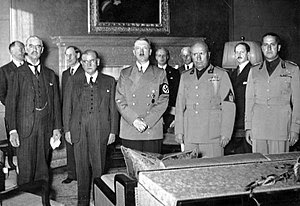
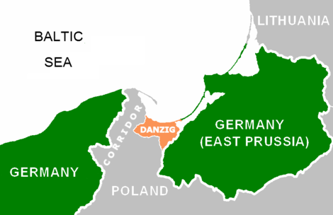

VÄGEN TILL KRIGET
Hitler hade till slut blivit enväldig härskare över Tyskland. Hans utrikesplaner var nu att expandera Tysklands landområden i Europa. Saar-området var det första som han återfick 1935. Det var ett gammalt tyskt område som efter Versaillesfreden tillhört Frankrike. Invånarna i området fick rösta vilket land de ville tillhöra. Det blev en stor triumf för Hitler när 90 % röstade för tyskt styre.

Rhenområdet var ett tyskt område som skulle avmilitariseras efter Versaillesfreden. Trots att det bröt mot Versaillesfredens avtal lät Hitler remilitarisera området. Soldaterna hade order om att retirera ifall franska soldater dök upp, men det gjorde de inte. Hitler började också inofficiellt att bygga upp sin armé, flotta och flyg vilket var motsatsen till vad som bestämts i Versaillesfreden. Efter ett tag återinfördes allmän värnplikt helt öppet och året efter förklarade Hitler att Tyskland inte längre var bundna till Versaillesfreden och skulle hädanefter helt ignorera avtalet. Segermakterna gjorde ingenting för att förhindra detta.
Hitler hade siktet på grannländerna Österrike, Tjeckoslovakien och Polen. Han ansåg att det tyska ariska folket hade rätt till större "livsrum" och skulle därför utvidga riket. Detta skulle komma att få oerhörda konsekvenser.
ÖSTERRIKE
Det existerade inte mycket av den dåtida stormakten Österrike-Ungern. Efter Versaillesfreden splittrades stormakten och Österrike var nu ett litet odemokratiskt land som var bebott av tysktalande människor. Många invånare i Österrike ville ha en förening med Tyskland, fast det tillät inte segermakterna. Hitler marscherade in med sina trupper i Österrike 1938 och fick hjälp av Österrikiska nazister. Tillsammans rensade nazisterna skoningslöst bort motståndare och kunde segrande tåga in i Wien.
TJECKOSLOVAKIEN
Tjeckoslovakien var ett demokratiskt och rätt välmående land, jämfört med Österrike. Det fanns tre folkgrupper i Tjeckoslovakien; tjecker, tyskar och slovaker. Majoriteten av Tjeckoslovakiens tyskar bodde i Sudetenland, vilket var gränsområdet till Tyskland. Liksom i Österrike ville många tyskar i Tjeckoslovakien förenas med Nazisttyskland. Hitler krävde därför att Sudetenland skulle ges till Tyskland.
MÜNCHENÖVERENSKOMMELSEN
Frankrike, Storbritannien, Tyskland och Italien möttes i München i september 1938 angående Sudetenland. Tjeckoslovakien som ägde Sudetenland var däremot inte inbjuden till mötet. Hitler berättade på mötet att efter Sudetenland var Tyskland inte intresserade av fler markområden. Då beslöt de övriga länderna att Sudetenland skulle ges till Tyskland. Den brittiske premiärministern Neville Chamberlain var övertygad om att freden var räddad.

Men där hade Neville Chamberlain fel. Trots sina löften tog Hitler resten av Tjeckoslovakien och i mars år 1939 blev landet ett tyskt protektorat, det vill säga en tysk lydstat som stod under tyskt skydd.
POLEN
När Hitler begärde att få den Polska korridoren och staden Danzig för att sammankoppla sina två landområden satte Storbritannien och Frankrike ner foten. De kunde inte längre lita på Hitlers tomma löften efter invasionen av Tjeckoslovakien. Både Storbritannien och Frankrike lovade Polen sin hjälp ifall de blev invaderade. Men en överraskande pakt mellan Tyskland och Sovjetunionen chockade världen.

MOLOTOV-RIBBENTROP-PAKTEN
Pakten mellan Tyskland och Sovjetunionen chockade världen för egentligen var kommunisterna och nazisterna dödsfiender. Båda grupperna hade bekämpat varandra länge och var så långt ifrån varandra i politiken som det gick att vara. Därför blev det en chock när pakten skrevs under.
Överenskommelsen innebar att de inte skulle anfalla varandra, men i hemlighet hade Tyskland och Sovjetunionen också delat upp Europa mellan sig.
Den första september 1939 började Tyskland sin polska invasion och två dagar senare förklarade Frankrike och Storbritannien krig mot Tyskland. Ett till världskrig hade startat.